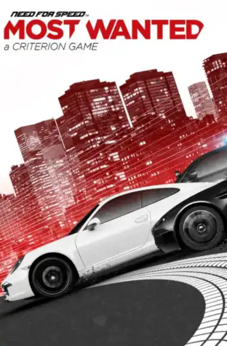

O Unbound Mistura elementos de Anime com um tremendo realismo, e ainda por cima conta com uma polícia super desafiadora
Disponível em:
NFS Hot Pursuit Remastered
2020 • Criterion Games
CorridaPerseguição policialCarros de Luxo
Hot Pursuit é um jogo de corrida que te coloca no papel de um policial ou um fugitivo em um mundo aberto cheio de carros rápidos e bonitos
Disponível em:
NFS HEAT
2019 • Ghost Games
CorridaPerseguição policialRally
Com um lindo mapa e seu modo diúrno / noturno, o Heat é considerado por muitos um dos melhores Needs da atualidade.
Disponível em:
NFS PAYBACK
2017 • Ghost Games
CorridaRallyPersonalização
Um Need polémico, porém, cheio de coisas novas para a franquia, como modo 24 horas (Dia e noite, incluindo nascer e por do sol) e corridas de Rally.
Disponível em:
NFS
2015 • Ghost Games
CorridaArcadeIndie
Tá afim de se entupir de Monster e correr contra o Ken Block, Neste Need For Speed você pode fazer isso, e com uma customização muito top!
Disponível em:
NFS RIVALS
2013 • Ghost Games
CorridaArcadeIndie
Ser corredor ou Policial? Neste Need você pode ser os dois. Escolha o seu lado e enfrente seus Rivais.
Disponível em:

NFS Most Wanted - 2012
2012 • Criterion Games
CorridaPerseguiçãoBurnout
Com saudades de uma Blacklist? Torne-se o mais procurado, pegue atalhos, troque de carros, seja discreto ou chame bastante atenção na cidade.
Disponível em:
NFS Shift 2 Unleashed
2011 • Slightly Mad Studios
CorridaAutomobilismoSimulador
Uma continuação do Need For Speed Shift, que traz muito do seu antescessor e muitas novidades.
Disponível em:
NFS The Run
2011 • Black Box
CorridaPerseguiçãoHistória envolvente
Uma corrida ilegal pelo país, onde tudo está em jogo. A única maneira de recuperar a sua vida é sendo o primeiro de São Francisco a Nova Iorque, Boa sorte na sua jornada.
Disponível em:
NFS Shift
2011 • Slightly Mad Studios
CorridaSimuladorAutomobilismo
Um game um pouco diferente dos demais, por aqui, você encontra um simulador de corridas de Automobilismo.
Disponível em:
NFS Undercover
2008 • Black Box
CorridaPerseguiçãoPolicial
Que tal acabar com uma facção criminosa de corredores sendo um corredor também? Se arrisque e teste os seus limites com este Need.
Disponível em:
NFS World
2008 • Black Box
CorridaPerseguiçãoMultiplayer
Um Need For Speed que revolucionou muito a franquia com seu multiplayer, e com seu mapa nostálgico.
Disponível em:
NFS Pro Street
2007 • Black Box
CorridaAutomobilismoPersonalização
Corra como o Ryan Cooper e vença os reis das pistas, se tornando o número 1 em Drag, Drift, Grip, Time Attack e muito mais.
Disponível em:
NFS Carbon
2006 • Black Box
CorridaPersonalizaçãoPerseguição
Uma continuação direta do aclamado NFS Most Wanted, Descubra seu próprio passado, e por quê você foi parar em Rockport. corra nos cânions e derrote seus rivais.
Disponível em:
NFS Most Wanted
2005 • Black Box
CorridaPerseguiçãoArcade
Quer vencer os 15 corredores de rua mais procurados de Rockport atrás de vingança? Se a resposta para essa pergunta for sim, te desejo boa sorte, e um bom carro.
Disponível em:
NFS Underground 2
2004 • Black Box
CorridaPersonalizaçãoIndie
Que tal rodar pelas estradas de Bayview com grande estilo? com o Underground 2 você pode explorar um mundo aberto e fazer muito mais.
Disponível em:
NFS Underground
2003 • Black Box
CorridaPersonalizaçãoArcade
O Need for Speed que mudou o rumo da franquia e foi um dos responsáveis pela grande fama da franquia.
Disponível em:
NFS Hot Pursuit 2
2002 • Black Box
CorridaPerseguição policialCarros de luxo
Um Need For Speed apimentado, cheio de perseguições policiais (Bem difíceis) e cheio de corridas. Vale muito apena platinar esse clássico.